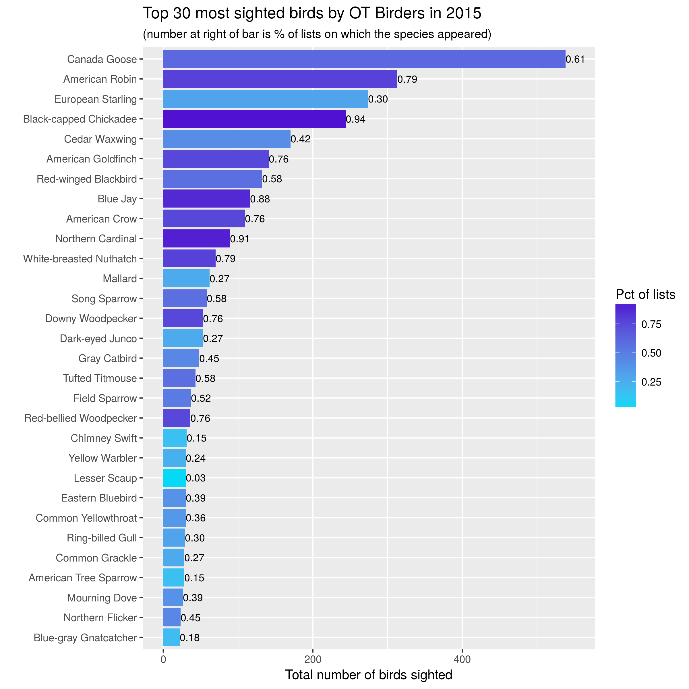
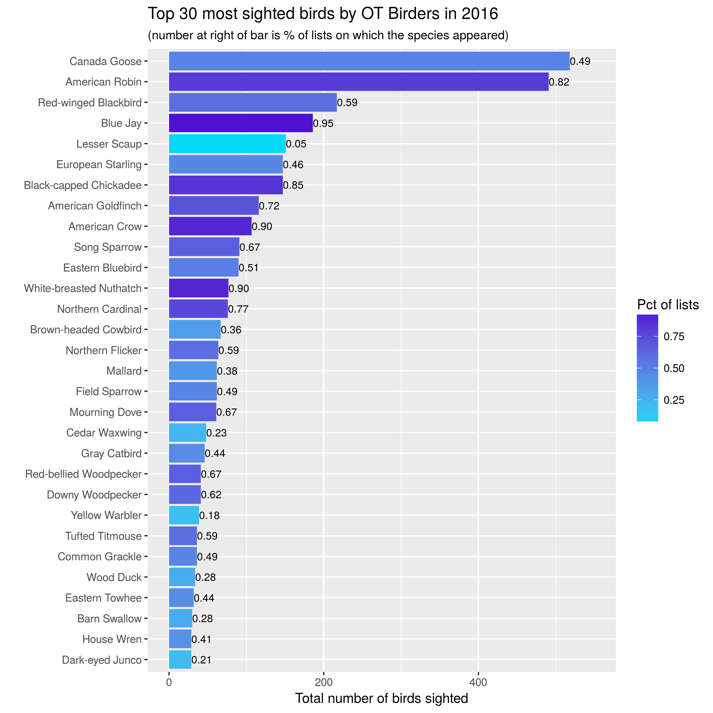
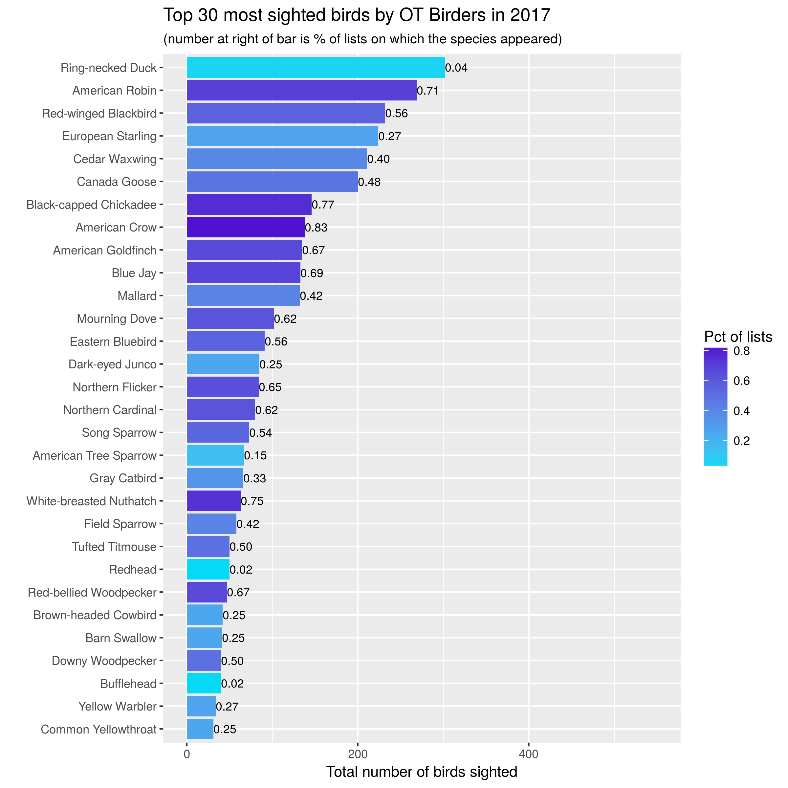
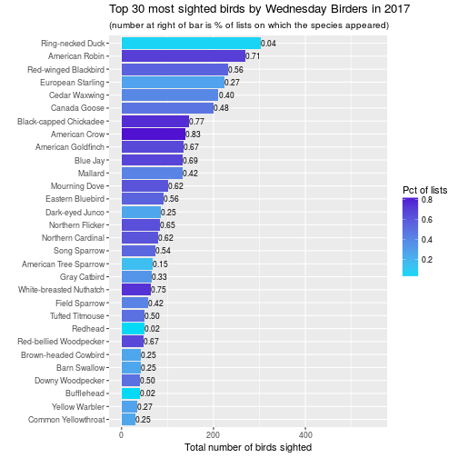

Wednesday OT Birders - Using the ebird API, Python, and R to analyze data for our birding group#
Using the eBird API from Python, we downloaded birding lists submitted by our Wednesday morning birding group. R was used to create some basic plots showing the top species sighted each year.
The Wednesday OT Birders#
Since 2015, a small but growing group of birders has met each Wednesday morning to bird one of the parks in Oakland Township. We have a mix of birding experience, a shared love of nature and dedication to stewardship of natural areas. The founder of the group is a scientist/naturalist (PhD in biology/botany) and the Natural Areas Manager for Oakland Township. So, not only do we get to bird, we get to learn a ton about the flora of the area. Our group is also fortunate to have a gifted writer and photographer who blogs about our parks at the Natural Areas Notebook.
Since the group’s inception, our bird lists have been entered into eBird, making it easy to answer those “Hey, have we ever seen a [insert random bird species] in this park?” queries. Now that we’ve got a few years of weekly data, it’s time for some birding analysis. In this first post, I’ll describe how I:
used the eBird API (2.0) with Python from a Jupyter notebook to download data from our bird lists into a pandas dataframe and then exported to csv file,
used R to clean up the data to make sure we were just using our Wednesday Birders lists for the analysis,
used the R packages dplyr and ggplot2 to summarize and make plots of species counts by year.
Downloading our data from eBird#
eBird.org is an extremely popular online site for entering bird sightings. It was started by the Cornell Lab of Ornithology and the National Audobon Society and has revolutionized birding by making it easy for anyone to enter observational data into a shared database and to then access that database through simple to use interfaces within web browsers or mobile apps.
Not only does eBird make it easy for you to enter sightings and manage your own lists of birds seen, it has a nice set of tools for exploring the massive amount of data it collects.
Summary graphs and tables
Search for recent sightings in “hotspots” or by any location
Interactive species maps
… and even more goodies
You can download your own data or the whole dataset through the eBird website. There is also an API that makes it easy to programmatically download a variety of detailed and summary data. The eBird API 1.1 is still available but people are urged to migrate to the new eBird API 2.0.
I’m going to use Python to do the data download. In order to use the eBird API 2.0 you need to obtain a free API key.
api_key = 'put_your_api_key_here'
The Wednesday Birders cycle through four different parks each month. I just manually grabbed the locIDs for these parks and stuffed them into a dictionary.
hotspot_ids = {'Bear Creek Nature Park':'L2776037',
'Cranberry Lake Park': 'L2776024',
'Charles Ilsley Park': 'L2905470',
'Draper Twin Lake Park': 'L1581963'}
We’ll need to use a few libraries.
import pandas as pd
import requests
import time #used to put .5 second delay in API data call
Set the date range for the download for 2015-01-01 through 2018-02-28.
start_date = pd.Timestamp('20150101')
end_date = pd.Timestamp('20180228')
num_days = (end_date - start_date).days + 1
rng = pd.date_range(start_date, periods=num_days, freq='D')
Just a little bit of Python code needed to grab the data through a series of web API calls.
# Base URL for eBird API 2.0
url_base_obs = 'https://ebird.org/ws2.0/data/obs/'
# Create a list to hold the individual dictionaries of observations
observations = []
# Loop over the locations of interest and dates of interest
for loc_id in loc_ids:
for d in rng:
time.sleep(0.5) # time delay
ymd = '{}/{}/{}'.format(d.year, d.month, d.day)
# Build the URL
url_obs = url_base_obs + loc_id + '/historic/' + ymd + \
'?rank=mrec&detail=full&cat=species&key=' + api_key
print(url_obs)
# Get the observations for one location and date
obs = requests.get(url_obs)
# Append the new observations to the master list
observations.extend(obs.json())
# Convert the list of dictionaries to a pandas dataframe
obs_df = pd.DataFrame(observations)
# Check out the structure of the dataframe
print(obs_df.info())
# Check out the first few rows
obs_df.head()
# Export the dataframe to a csv file
obs_df.to_csv("observations.csv", index=False)
Data prep#
All of the data prep and analysis is done in R. We’ll need a few libraries:
library(dplyr)
library(ggplot2)
library(lubridate)
Before diving into analysis and plots, a little data prep is needed:
read CSV file into an R dataframe
convert datetime fields to POSIXct
include only the lists from our Wednesday morning walks
# Read in the csv file
obs_raw <- read.csv("./data/observations.csv")
# Convert date field to POSIXct
obs_raw$obsDt <- as.POSIXct(obs_raw$obsDt)
# Create list of our birders who have entered >= 1 list
list_authors <- c("VanderWeide", "Isken", "Kriebel")
# Filter out lists not done on Wed by one of the list authors
obs_df <- obs_raw %>%
filter(lastName %in% list_authors & wday(obsDt) == 4)
# Check out the first few rows
head(obs_df)
## checklistId comName countryCode countryName firstName
## 1 CL24105 Canada Goose US United States Benjamin
## 2 CL24105 Turkey Vulture US United States Benjamin
## 3 CL24105 Red-tailed Hawk US United States Benjamin
## 4 CL24105 Sandhill Crane US United States Benjamin
## 5 CL24105 Red-bellied Woodpecker US United States Benjamin
## 6 CL24105 Downy Woodpecker US United States Benjamin
## hasComments hasRichMedia howMany lastName lat lng locID
## 1 False False 2 VanderWeide 42.78965 -83.10907 L2905470
## 2 False False 1 VanderWeide 42.78965 -83.10907 L2905470
## 3 False False 2 VanderWeide 42.78965 -83.10907 L2905470
## 4 False False 2 VanderWeide 42.78965 -83.10907 L2905470
## 5 False False 1 VanderWeide 42.78965 -83.10907 L2905470
## 6 False False 1 VanderWeide 42.78965 -83.10907 L2905470
## locId locName locationPrivate obsDt obsId
## 1 L2905470 Charles Ilsley Park False 2015-03-18 OBS303938306
## 2 L2905470 Charles Ilsley Park False 2015-03-18 OBS303938307
## 3 L2905470 Charles Ilsley Park False 2015-03-18 OBS303938305
## 4 L2905470 Charles Ilsley Park False 2015-03-18 OBS303938302
## 5 L2905470 Charles Ilsley Park False 2015-03-18 OBS303938303
## 6 L2905470 Charles Ilsley Park False 2015-03-18 OBS303938301
## obsReviewed obsValid presenceNoted sciName speciesCode
## 1 False True False Branta canadensis cangoo
## 2 False True False Cathartes aura turvul
## 3 False True False Buteo jamaicensis rethaw
## 4 False True False Antigone canadensis sancra
## 5 False True False Melanerpes carolinus rebwoo
## 6 False True False Picoides pubescens dowwoo
## subId subnational1Code subnational1Name subnational2Code
## 1 S22414352 US-MI Michigan US-MI-125
## 2 S22414352 US-MI Michigan US-MI-125
## 3 S22414352 US-MI Michigan US-MI-125
## 4 S22414352 US-MI Michigan US-MI-125
## 5 S22414352 US-MI Michigan US-MI-125
## 6 S22414352 US-MI Michigan US-MI-125
## subnational2Name userDisplayName
## 1 Oakland Benjamin VanderWeide
## 2 Oakland Benjamin VanderWeide
## 3 Oakland Benjamin VanderWeide
## 4 Oakland Benjamin VanderWeide
## 5 Oakland Benjamin VanderWeide
## 6 Oakland Benjamin VanderWeide
Plots of Species Counts#
How many birds of each species have we seen? How frequently are each species seen?
Let’s start with simple bar charts:
one bar per species, one year per graph,
bar length is number of birds seen,
color of bar is related to percentage of lists on which that species seen,
number at end of bar is percentage of lists on which that species seen.



A few observations:
Familiar year round friends such as Canada Goose, American Robin, Black-capped Chicadee, Blue Jay and American Goldfinch are sighted in large numbers and on most outings.
Large flocks of European Starlings lead to them having a high number of sightings but appearing relatively infrequently in our lists. In 2017, one big flock of Ring-necked Ducks gave them the title of most birds seen that year!
The overall composition of the lists are pretty similar across the three years. However, overall numbers appear to be down in 2017. Turns out this is in spite of fact that we had more outings (lists) in 2017 (48) than in 2016 (39). This requires more investigation.
Creating the plots#
The plots above are easy to create from a dataframe that looks like this:
## comName birding_year num_lists tot_birds totlists
## 1 Ring-necked Duck 2017 2 302 48
## 2 American Robin 2017 34 269 48
## 3 Red-winged Blackbird 2017 27 232 48
## 4 European Starling 2017 13 224 48
## 5 Cedar Waxwing 2017 19 211 48
## 6 Canada Goose 2017 23 200 48
## 7 Black-capped Chickadee 2017 37 146 48
## 8 American Crow 2017 40 138 48
## 9 American Goldfinch 2017 32 135 48
## 10 Blue Jay 2017 33 133 48
## 11 Mallard 2017 20 132 48
## 12 Mourning Dove 2017 30 102 48
## 13 Eastern Bluebird 2017 27 91 48
## 14 Dark-eyed Junco 2017 12 85 48
## 15 Northern Flicker 2017 31 84 48
## 16 Northern Cardinal 2017 30 80 48
## 17 Song Sparrow 2017 26 73 48
## 18 American Tree Sparrow 2017 7 67 48
## 19 Gray Catbird 2017 16 66 48
## 20 White-breasted Nuthatch 2017 36 63 48
## 21 Field Sparrow 2017 20 58 48
## 22 Redhead 2017 1 50 48
## 23 Tufted Titmouse 2017 24 50 48
## 24 Red-bellied Woodpecker 2017 32 47 48
## 25 Brown-headed Cowbird 2017 12 42 48
## 26 Barn Swallow 2017 12 41 48
## 27 Bufflehead 2017 1 40 48
## 28 Downy Woodpecker 2017 24 40 48
## 29 Yellow Warbler 2017 13 34 48
## 30 Common Yellowthroat 2017 12 31 48
## pctlists
## 1 0.04166667
## 2 0.70833333
## 3 0.56250000
## 4 0.27083333
## 5 0.39583333
## 6 0.47916667
## 7 0.77083333
## 8 0.83333333
## 9 0.66666667
## 10 0.68750000
## 11 0.41666667
## 12 0.62500000
## 13 0.56250000
## 14 0.25000000
## 15 0.64583333
## 16 0.62500000
## 17 0.54166667
## 18 0.14583333
## 19 0.33333333
## 20 0.75000000
## 21 0.41666667
## 22 0.02083333
## 23 0.50000000
## 24 0.66666667
## 25 0.25000000
## 26 0.25000000
## 27 0.02083333
## 28 0.50000000
## 29 0.27083333
## 30 0.25000000
The only real trickiness is getting the percentage of lists column computed. We can do it in a few steps using dplyr. For the example below I’ve just hard coded in 2017 as the year of interest. In reality, I embedded the code below in a function and passed the year of interest in.
# Create num species by list dataframe
numsp_bylist <- obs_df %>%
group_by(year=year(obsDt), obsDt, subId, lastName) %>%
count() %>%
arrange(year, subId)
# Using numsp_bylist, create num lists by date
numlists_bydt <- numsp_bylist %>%
group_by(obsDt) %>%
summarise(
numlists = n()
) %>%
filter(numlists >= 1) %>%
arrange(obsDt)
# Usings numlists_bydt, create num lists by year
numlists_byyear <- numlists_bydt %>%
group_by(birding_year=year(obsDt)) %>%
summarise(
totlists = sum(numlists)
)
# Now ready to compute species by year
species_byyear <- obs_df %>%
group_by(comName, birding_year=year(obsDt)) %>%
summarize(
num_lists = n(),
tot_birds = sum(howMany)
) %>%
arrange(birding_year, desc(tot_birds))
# Join to numlists_byyear so we can compute pct of lists each species
# appeared in.
species_byyear <- left_join(species_byyear, numlists_byyear, by = 'birding_year')
# These would be passed in to function version of this code
bird_year <- 2017
ntop <- 30
# Compute the percentage of lists on which each species appeard
top_obs_byyear <- species_byyear %>%
filter(birding_year == bird_year) %>%
mutate(pctlists = num_lists / totlists) %>%
arrange(desc(tot_birds)) %>%
head(ntop)
Finally we are ready to make the plot. For this post I’m cheating a bit by hard coding in a y-axis limit. In the function version, this can be passed in.
ggplot(top_obs_byyear) +
geom_bar(aes(x=reorder(comName, tot_birds),
y=tot_birds, fill=pctlists), stat = "identity") +
scale_fill_gradient(low='#05D9F6', high='#5011D1') +
labs(x="",
y="Total number of birds sighted",
fill="Pct of lists",
title = paste0("Top 30 most sighted birds by Wednesday Birders in ", bird_year),
subtitle = "(number at right of bar is % of lists on which the species appeared)") +
coord_flip() +
geom_text(data=top_obs_byyear,
aes(x=reorder(comName,tot_birds),
y=tot_birds,
label=format(pctlists, digits = 1),
hjust=0
), size=3) + ylim(0,550)

Next steps#
Now that we’ve got the raw data downloaded and cleaned up, we can do a bunch of exploratory analysis and our Wednesday morning birding group will know a little more about what we’ve been seeing.